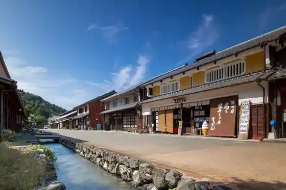
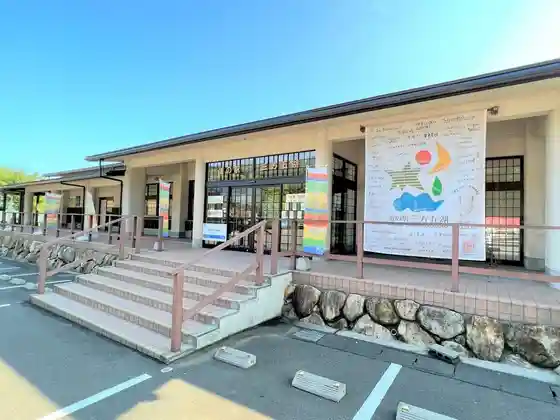

Reimbo Line Sancho Park Mikata Go Mizumi Ni Uka Bu Tenku no Terasu
Wakasacho, Fukui · 0770-47-1170 · Official / source link

Mikata Go Mizumi
Wakasacho, Fukui · 0770-32-0222 · Official / source link

Kumakawa Yado (Saba Kaido)
Wakasacho, Fukui · 0770-45-9111 · Official / source link

Wakasacho Uri Wari Meisui Park Uri Wari Falls
Wakasacho, Fukui · 0770-62-0186 · Official / source link
Roadside Station Mikata Go Mizumi
Wakasacho, Fukui · 0770-45-0113 · Official / source link

Fukuiken Nen Shima Museum
Wakasacho, Fukui · 0770-45-0456 · Official / source link
Rentasaikuru - Wakasacho −JR Mikata Eki
Wakasacho, Fukui · 0770-45-1661 · Official / source link
Jomon Roman Park
Wakasacho, Fukui · 0770-45-2270 · Official / source link
Wakasacho Kankosen Reikukuruzu
Wakasacho, Fukui · 0770-47-1127 · Official / source link
Tei O Tera (Tei O Tera) no Icho Kannon
Wakasacho, Fukui · 0770-62-0864 · Official / source link
Rentasaikuru - Wakasacho −JR Kaminaka Eki
Wakasacho, Fukui · 0770-62-0013 · Official / source link
Wakasacho Mikata Jomon Museum
Wakasacho, Fukui · 0770-45-2270 · Official / source link
Ume no Sato Hall
Wakasacho, Fukui · 0770-46-1501 · Official / source link
Umi Kaori no Yado Nami Hana Ro
Wakasacho, Fukui · 0770-47-1423 · Official / source link
Wakasacho Saba Kaido Kumakawa Yado Museum (Shukuba Kan)
Wakasacho, Fukui · 0770-62-0330 · Official / source link
Fukuiken Kaihin Shizen Center
Wakasacho, Fukui · 0770-46-1101 · Official / source link
Shoku Ken Beach
Wakasacho, Fukui · 0770-45-0113 · Official / source link
Yuko Beach
Wakasacho, Fukui · 0770-45-0113 · Official / source link
Roadside Station (Wakasacho Kumakawa Yado)
Wakasacho, Fukui · 0770-62-9111 · Official / source link
Mikata Ishi Kanzeon
Wakasacho, Fukui · 0770-45-0017 · Official / source link
Tentoku Tera
Wakasacho, Fukui · 0770-45-1115 · Official / source link
Showa Kan mukuri
Wakasacho, Fukui · 0770-47-1722 · Official / source link
Ryoshi no Yado (Hase)
Wakasacho, Fukui · 0770-46-1735 · Official / source link
Kamiko Beach
Wakasacho, Fukui · 0770-45-0113 · Official / source link
Yo Kyu Ken Beach
Wakasacho, Fukui · 0770-45-0113 · Official / source link
Fukuiken Kaihin Shizen Center
Wakasacho, Fukui · 0770-46-1101 · Official / source link
Hamato
Wakasacho, Fukui · 0770-47-1724 · Official / source link
Kamiko no Yamazakura
Wakasacho, Fukui · 0770-45-0113 · Official / source link
YUMIKATSURA MUSEUM WAKASA
Wakasacho, Fukui · 0770-45-3070 · Official / source link
Ogawa Beach
Wakasacho, Fukui · 0770-45-0113 · Official / source link
Ebisuya
Wakasacho, Fukui · 0770-47-1301 · Official / source link
Shigeta Ie
Wakasacho, Fukui · 0770-46-1650 · Official / source link
Reinan Ranch
Wakasacho, Fukui · 0770-62-0583 · Official / source link
Wakasacho Rekishi Bunka Kan
Wakasacho, Fukui · 0770-45-2270 · Official / source link
Izumi Oka Hitokoto Shrine
Wakasacho, Fukui · 0770-45-2270 · Official / source link
Meisui Village
Wakasacho, Fukui · 0770-62-0186 · Official / source link
Kumakawa Bansho
Wakasacho, Fukui · 0770-62-0330 · Official / source link
Shakushi Beach
Wakasacho, Fukui · 0770-45-0113 · Official / source link
Ebisu Shrine (Sube Shrine)
Wakasacho, Fukui · 0770-45-2270 · Official / source link
Matsuki Shrine
Wakasacho, Fukui · 0770-45-2270 · Official / source link
Sakuma Kinen Koryu Hall
Wakasacho, Fukui · 0770-45-1780 · Official / source link
Mikata Ishi Kanzeon no Shidare Sakura
Wakasacho, Fukui · 0770-45-0017 · Official / source link
Wakasacho Town Hall Mikata Chosha
Wakasacho, Fukui · 0770-45-1111 · Official / source link